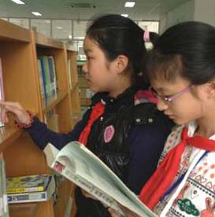
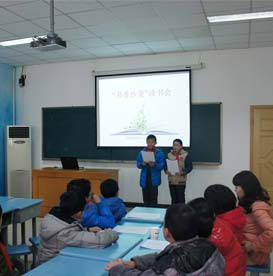
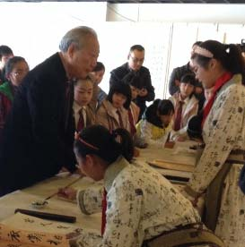

-

我和图书的约会
10月17日，随着塔山中心小学一百多名学生的到来，馆校联动之“我与图书的约会”活动拉开了序幕。根据活动安排，本学期周二至周五，塔山中心小学将每天安排百名学生来我馆开辟第二课堂，主要开展包括少儿图书阅览、少儿专题讲座、少儿电影欣赏、读后感及影评征文等活动。
-

书香沙龙
以“我读书、我快乐、我智慧”为主题的“书香沙龙”活动，在少儿馆三楼“悦读之家”活动室正式启幕。
活动邀请了来自塔山中心小学的11位小讲师，他们以PPT演示和讲解相结合的方式，与大家分享了名人故事、名作赏析、历史再现、科普科技等，活动特邀塔山中心小学资深教师作点评，并现场授予其中七位优胜者“书香沙龙”活动，绍兴图书馆少儿馆特邀小讲师称号。
-

书写经典作品展
第三十届兰亭国际书法节来临之际，绍兴图书馆和兰亭镇中心小学联合举办了“书写经典”少儿书画作品展，本次书画展旨在推动我市少年儿童传承兰亭书法艺术，弘扬古越文化，为兰亭书法节营造浓郁的文化氛围，展现绍兴图书馆文化普及和文化育人职能。
-
“心怀感恩”经典阅读——阅读分享会和征文比赛
为配合开展第十届未成年人读书节活动，绍兴图书馆与群贤小学联合开展了“诵读经典，心怀感恩”阅读分享会和读后感征文活动。每位参赛选手通过声情并茂的演讲，并配以精美的PPT演示，通过重演江姐、雷锋等感人故事，给大家演示了一幕幕感人场景，也赋予了活动更深的意义。
-
人人为我 我为人人-绘本剧《石头汤》编排
通过此次亲身表演绘本剧《石头汤》, 小朋友们感受到故事中曾经那个老死不相往来的小村庄变得互帮互爱了起来，原本各人自扫门前雪的自私村民们也在外来和尚们的帮助下成长为人人为我，我为人人的和谐大家庭。我们期望小朋友们从中可以领悟到只有学会分享和付出才能找到快乐的源泉；只有做一个使别人幸福的人,自己才会真正幸福的道理。此次生动有趣的表演经历,激发了小朋友们的表演潜能，培养了他们绘本阅读的兴趣。